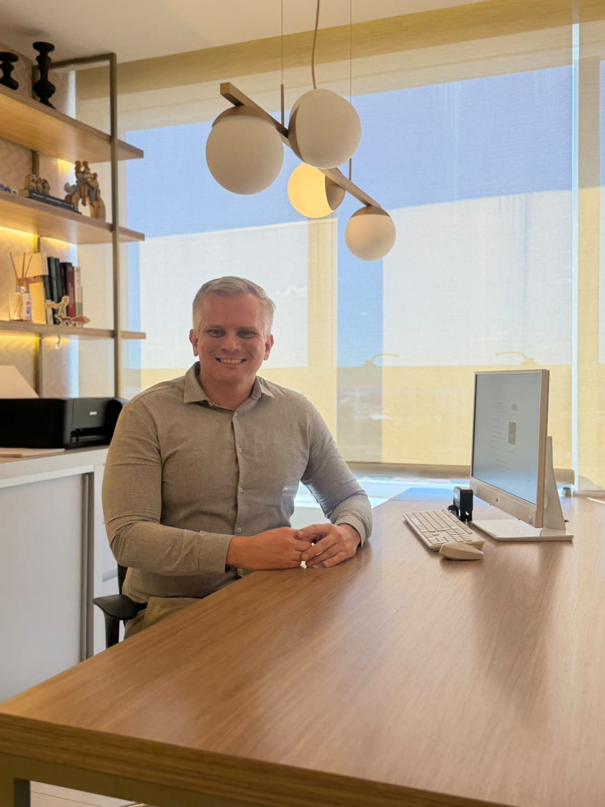
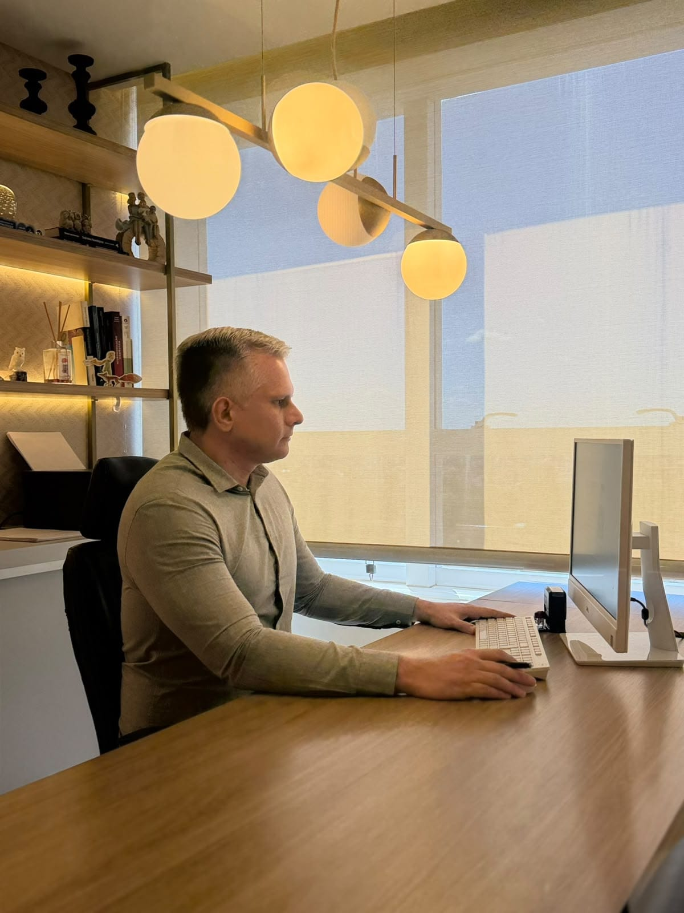

Psiquiatria geral e da infância e adolescência
Cuidado em saúde mental, da infância à vida adulta
Atendo online adolescentes a partir de 12 anos e adultos, em todo o Brasil e no exterior. Em Goiânia, atendo presencialmente crianças e adolescentes.
Escolha o formato abaixo: você fala com a secretária pelo WhatsApp, que informa os horários disponíveis. Atendimento particular, sem convênio.
Todo o Brasil · a partir de 12 anos
Crianças e adolescentes
Respondemos de segunda a sexta, das 9h às 17h.
Dr. Ronaldo Lopes · CRM-GO 15751 · RQE 20033 e 20034

Como funciona a consulta online
Para adolescentes a partir de 12 anos e adultos, em qualquer cidade do Brasil ou no exterior.
- Chame no WhatsApp e informe quem é o paciente e a sua cidade. A secretária responde com os horários disponíveis.
- A consulta acontece por chamada de vídeo, no horário marcado.
- Receitas e documentos são emitidos digitalmente, conforme a regulamentação vigente.
- Atendimento particular (sem convênio), para adolescentes a partir de 12 anos e adultos.
Todo o Brasil · a partir de 12 anos
Crianças e adolescentes
Respondemos de segunda a sexta, das 9h às 17h.
Especialidades
Avaliação, diagnóstico e acompanhamento na infância, na adolescência e na vida adulta.
Autismo (TEA)
Avaliação e acompanhamento na infância, e também investigação diagnóstica na vida adulta.
TDAH
Desatenção, hiperatividade e impulsividade, em crianças, adolescentes e adultos, inclusive o diagnóstico na vida adulta.
TOD
Irritabilidade e comportamentos desafiadores na infância e na adolescência.
Ansiedade
Preocupação excessiva, medo e sintomas físicos que atrapalham a rotina.
Depressão
Tristeza persistente, desânimo e perda de interesse pelas atividades.
TOC
Pensamentos obsessivos e comportamentos repetitivos.
Fobia social
Medo intenso de situações sociais e de exposição.
TAB
Transtorno afetivo bipolar: acompanhamento das oscilações de humor.
Não sabe se é o caso de uma consulta? Pergunte à secretária pelo WhatsApp. Agendar consulta
Formação
Graduação
Medicina pela Universidade Federal do Pará. Formado há 15 anos.
Residências médicas
Psiquiatria pela Universidade Estadual de Maringá e psiquiatria da infância e adolescência pelo CHC-UFPR.
Títulos de especialista
Psiquiatria (RQE 20033) e Psiquiatria da Infância e Adolescência (RQE 20034).
Online para todo o Brasil ou presencial em Goiânia. Agendar consulta

Atuação
A primeira consulta começa por entender a história do paciente e da família: o que mudou, desde quando e como isso afeta a escola, o trabalho e a convivência.
Com base na avaliação, o plano de tratamento é construído com o paciente e a família e revisto ao longo do acompanhamento. Quando necessário, há contato com a escola e com outros profissionais de saúde que acompanham o caso.
Atendo crianças, adolescentes e adultos.
Experiência
Crianças e adolescentes
Transtornos do neurodesenvolvimento, como autismo (TEA), TDAH e deficiência intelectual; ansiedade, depressão e alterações de comportamento, como agressividade, impulsividade e comportamentos disruptivos.
Adultos
Investigação de diagnóstico tardio de autismo e TDAH; ansiedade, depressão, transtorno afetivo bipolar, TOC, transtornos psicóticos, uso problemático de álcool e outras substâncias e dependências comportamentais, como o transtorno do jogo e as apostas.
Agende sua consulta. Online para todo o Brasil, presencial em Goiânia. Atendimento particular.
Agendar consultaDepoimentos
A atenção e a forma como Dr. Ronaldo cuida de seus pacientes é inexplicável, desde a chegada no consultório até a saída somos tão bem recepcionados e assistidos que não temos nem vontade de ir embora. Sua explicação clara, seu diagnóstico preciso e o conhecimento tão amplo na área nos dão a certeza de que fizemos a escolha certa em tê-lo como médico, meu filho de 7 anos evoluiu com apenas 1 mês de tratamento. Espero que outras mães possam ter a oportunidade de levarem seus filhos, e assim como eu sair não só feliz mas também com a certeza de uma escolha bem feita.
Dr., gostaria de expressar minha profunda gratidão pelo atendimento excepcional que recebi. Sua competência médica e sua forma humanizada e atenciosa de lidar com os pacientes, profissional dedicado à saúde e ao bem-estar das pessoas.
Excelente profissional! Muito atencioso durante a consulta, valoriza cada detalhe! Os pais se sentem muito bem acolhidos! Recomendo!
Excelente especialista! Além de atencioso é criterioso e tem muito conhecimento de causa. Diagnóstico muito acertado.
Agradeço Dr. Ronaldo por seu conhecimento e atenção.
Tenho TAB e estava em crise de hipomania, mas com sua ajuda, rapidamente conseguimos reverter minha condição e estou muito bem.
Que Deus abençoe seu trabalho Dr. Ronaldo para que possa ajudar muitas outras pessoas!
Obrigada☺️
Contato
O agendamento é feito pelo WhatsApp, com a secretária. Atendimento particular: não atendemos convênios médicos.
- (62) 98113-4061WhatsApp, escolha o formato abaixo
- @dr.ronaldo_lopesInstagram
- Av. C-4, 931 - sala 1105- Bloco A - Jardim América, Goiânia - GO, 74265-040Consultório (atendimento presencial)
Todo o Brasil · a partir de 12 anos
Crianças e adolescentes
Respondemos de segunda a sexta, das 9h às 17h.